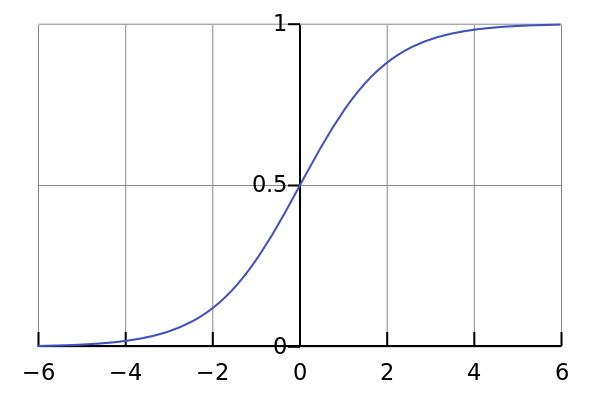

class: center, middle, title-slide count: false # Lesson 3: ## Classification in Deep Learning <br/><br/> .bold[Marc Lelarge] --- # Overview of the course: 1- .grey[Course overview: machine learning pipeline] 2- .grey[PyTorch tensors and automatic differentiation] 3- Classification with deep learning * .red[Loss] and .red[Optimizer] - in PyTorch: [`torch.optim`](https://pytorch.org/docs/stable/optim.html) and [Loss functions](https://pytorch.org/docs/stable/nn.html#loss-functions) in `torch.nn` --- # Deep Learning pipeline ## Dataset and Dataloader + Model + .red[Loss and Optimizer] = .grey[Training] .center[ <img src="images/lesson1/ml4.png" style="width: 1000px;" /> ] --- # Supervised learning basics ## Linear regression ## Gradient descent algorithms ## Logistic regression ## Classification and softmax regression --- ## Linear regression ### a probabilistic model The .bold[dataset] is made of $m$ .bold[training examples] $(x(i), y(i))\_{i\in [m]}$, where $x(i) \in \mathbb{R}^d$ are the .bold[features] and $y(i)\in \mathbb{R}$ are the .bold[target] variables. -- count: false Assumption, there exists $\theta\in \mathbb{R}^d$ such that: $$ y(i) = \theta^T x(i) +\epsilon(i), $$ with $\epsilon(i)$ i.i.d. Gaussian random variables (mean zero and variance $\sigma^2$). -- count: false Computing the .bold[likelihood] function gives: $$\begin{aligned} L(\theta) &= \prod\_{i=1}^m p\_\theta(y(i) | x(i))\\\\ & = \prod\_{i=1}^m \frac{1}{\sigma\sqrt{2\pi}}\exp\left(-\frac{(y(i)-\theta^T x(i))^2}{2\sigma^2}\right) \end{aligned} $$ --- ## Linear regression Maximizing the .bold[log likelihood]: $$\begin{aligned} \ell(\theta) &= \log L(\theta)\\\\ & = -m\log(\sigma\sqrt{2\pi}) -\frac{1}{2\sigma^2}\sum\_{i=1}^m(y(i)-\theta^T x(i))^2 \end{aligned}$$ is the same as minimizing the .bold[cost function]: $$ J(\theta) = \frac{1}{2}\sum\_{i=1}^m(y(i)-\theta^T x(i))^2, $$ giving rise to the .bold[ordinary least squares] regression model. -- count: false The gradient of the least-squares cost function is: $$ \frac{\partial}{\partial \theta\_j}J(\theta) = \sum\_{i=0}^m (y(i)-\theta^T x(i))\frac{\partial}{\partial \theta\_j}\left( y(i)-\sum\_{k=0}^d\theta\_k x\_k(i) \right) = \sum\_{i=0}^m (y(i)-\theta^T x(i))x\_j(i) $$ --- ## Gradient descent algorithms .bold[Batch gradient descent] perfoms the update: $$ \theta\_j := \theta\_j +\alpha \sum\_{i=0}^m (y(i)-\theta^T x(i))x\_j(i), $$ where $\alpha$ is the .bold[learning rate]. This method looks at every example in the entire training set on every step. -- count: false .bold[Stochastic gradient descent] works very well. The sum above is 'replaced' by a loop over the training examples, so that the update becomes: for $i=1$ to $m$: $$ \theta\_j := \theta\_j +\alpha (y(i)-\theta^T x(i))x\_j(i). $$ --- ## Linear regression Recall that under mild assumptions, the explicit solution for the ordinary least squares can be written explicitely as: $$ \theta^* = (X^TX)^{-1}X^T Y, $$ where the linear model is written in matrix form $Y = X\theta +\epsilon$, with $Y=(y(1), \dots y(m))\in \mathbb{R}^m$ and $X = (x(1),\dots x(m))\in \mathbb{R}^{m\times d}$. Exercise: show the above formula is valid as soon as $\text{rk}(X) = d$. -- count: false In other words, (if you are able to invert $X^TX$) __optimization is useless for linear regression!__ Nevertheless, gradient descent algorithms are important optimization algorithms with theoretical guarantees when the cost function is .bold[convex]. We used linear regression mainly as an example to understand PyTorch framework. --- ## PyTorch implementation for batch gradient descent ```py import torch model = torch.nn.Sequential(torch.nn.Linear(2, 1)) loss_fn = torch.nn.MSELoss(reduction='sum') model.train() optimizer = torch.optim.SGD(model.parameters(), lr=learning_rate) for epoch in range(n_epochs): y_pred = model(x) loss = loss_fn(y_pred, y) optimizer.zero_grad() loss.backward() optimizer.step() ``` code taken from the [notebook](https://github.com/mlelarge/dataflowr/blob/master/PlutonAI/02_basics_PlutonAI_colab.ipynb) of last lesson. -- count: false But the important piece of code is (assuming x and y are numpy array): ```py *dtype = torch.FloatTensor *x = torch.from_numpy(x).type(dtype) *y = torch.from_numpy(y).type(dtype).unsqueeze(1) ``` The default type for weights and biases are torch.FloatTensor. So, you'll need to cast your inputs to torch.FloatTensor. Moreover, the shape of the target y needs to be $[\text{batch size},1]$. --- ## Logistic regression ### a probabilistic model A natural (generalized) linear model for .bold[binary classification]: $$ \begin{aligned} p\_\theta(y=1|x) &= \sigma(\theta^T x),\\\\ p\_\theta(y=0|x) &= 1-\sigma(\theta^T x), \end{aligned} $$ where $\sigma(z) = \frac{1}{1+e^{-z}}$ is the .bold[sigmoid function] (or .bold[logistic function]). .center[  ] --- ## A pause on notations We (mainly) use the compact notations used in .bold[information theory]: the function $p(.)$ is defined by its argument so that $p(x)$ is the distribution of the r.v. $X$ and $p(y)$ the distribution of the r.v. $Y$: $$ \begin{aligned} p(x) &= P(X=x)\\\\ p(y) &= P(Y=y)\\\\ p(x,y) &= P(X=x, Y=y)\\\\ p(y|x) &= P(Y=y|X=x)\\\\ &= \frac{p(x,y)}{p(x)} = \frac{p(x,y)}{\sum\_y p(x,y)} \end{aligned} $$ -- count: false In particular, we can write our model more compactly as: $$ p\_\theta(y|x) = \sigma(\theta^T x)^y(1-\sigma(\theta^T x))^{(1-y)}. $$ --- ## Logistic regression The likelihood function is now: $$ L(\theta) = \prod\_{i=1}^m \sigma(\theta^T x(i))^{y(i)}\left( 1-\sigma(\theta^T x(i))\right)^{1-y(i)} $$ -- count: false So that the log likelihood is: $$\ell(\theta) = \sum\_{i=1}^m y(i)\log \sigma(\theta^T x(i))+(1-y(i))\log \left( 1-\sigma(\theta^T x(i))\right) $$ There is no closed form fomula for $\arg\max \ell(\theta)$ so that we need now to use iterative algorithms. -- count:false The gradient of the log likelihood is: $$ \frac{\partial}{\partial \theta\_j}\ell(\theta) = \sum\_{i=1}^m (y(i)-\sigma(\theta^T x(i))x\_j(i), $$ where we used the fact that $\sigma'(z) = \sigma(z)(1-\sigma(z))$. --- ## Logistic regression ### Binary cross entropy loss torch.nn.BCELoss computes Binary Cross Entropy between the targets $y=(y(1),\dots, y(m))\in \\{0,1\\}^m$ and the output $z=(z(1),\dots, z(m))\in [0,1]^m$ as follows: $$\begin{aligned} \text{loss}(i) &= -[y(i)\log z(i) +(1-y(i))\log(1-z(i))]\\\\ \text{BCELoss}(z,y) &= \frac{1}{m}\sum\_{i=1}^m \text{loss}(i). \end{aligned} $$ In summary, we get $$ \text{BCELoss}(\sigma(X^T \theta),y) = - \frac{1}{m} \ell(\theta), $$ where the sigmoid function is applied componentwise. --- ## Logistic regression ### Binary cross entropy with logits loss torch.nn.BCEWithLogitsLoss combines a Sigmoid layer and the BCELoss in one single class. $$\begin{aligned} \text{loss}(i) &= -[y(i)\log \sigma(z(i)) +(1-y(i))\log(1-\sigma(z(i)))]\\\\ \text{BCEWithLogitsLoss}(z,y) &= \frac{1}{m}\sum\_{i=1}^m \text{loss}(i). \end{aligned} $$ $$ \text{BCEWithLogitsLoss}(z,y) = \text{BCELoss}(\sigma(z),y). $$ -- count: false This version is more numerically stable. Note the default $1/m$ factor, where $m$ is typically the size of the batch. This factor will be directly multiplied with the learning rate. Recall the batch gradient descent update: $$ \theta\_j := \theta\_j +\alpha \frac{\partial}{\partial \theta\_j}\text{loss}(\theta). $$ --- ## Softmax regression ### a probabilistic model We now have $c$ classes and for a training example $(x,y)$, the quantity $\theta\_k^T x$ should be related to the probability for the target $y$ to belong to class $k$. By analogy with the binary case, we assume: $$ \log p\_\theta(y = k| x) \propto \theta\_k^T x, \quad \text{for all }k=1,\dots, c. $$ As a consequence, we have with $\theta=(\theta\_1,\dots, \theta\_c)\in\mathbb{R}^{d\times c}$: $$ p\_\theta(y = k| x) = \frac{e^{\theta\_k^T x}}{\sum\_l e^{\theta\_l^T x}} $$ and we can write it in vector form: $$ (p\_\theta(y = k| x))\_{k=1,\dots,c } =\text{softmax}(\theta\_1^T x,\dots,\theta\_c^T x) $$ --- ## Softmax regression For the logistic regression, we had only one parameter $\theta$ whereas here, for two classes we have two parameters: $\theta_1$ and $\theta_2$. For 2 classes, we recover the logistic regression: $$ \begin{aligned} p\_\theta(y=1|x) &= \frac{e^{\theta\_1^T x}}{e^{\theta\_1^T x}+e^{\theta\_0^T x}}\\\\ &= \frac{1}{1+e^{(\theta\_0-\theta\_1)^T x}}\\\\ &= \sigma\left( (\underbrace{\theta\_1-\theta\_0}_{\theta})^T x\right) \end{aligned} $$ --- ## Classification and softmax regression For the .bold[softmax regression], the log-likelihood ca be written as: $$\begin{aligned} \ell(\theta) &= \sum\_{i=1}^m \sum\_{k=1}^c 1(y(i) =k) \log \left( \frac{e^{\theta\_k^T x(i)}}{\sum\_l e^{\theta\_l^T x(i)}}\right)\\\\ & = \sum\_{i=1}^m \log \text{softmax}\_{y(i)}(\theta\_1^T x(i),\dots,\theta\_c^T x(i)) \end{aligned} $$ In PyTorch, if the last layer of your network is a `LogSoftmax()` function, then you can do a softmax regression with the `torch.nn.NLLLoss()`. -- count: false Most of the time, we are not interested in softmax regression but in classification, i.e. we need to output a class not a probability vector on the classes. For classification of the feature $x$, we output the most probable class: $$ \arg\max \\{ \theta\_1^T x,\dots, \theta\_c^T x\\} $$ --- ## Back to dogs and cats! In the [dogs and cats example](https://github.com/mlelarge/dataflowr/blob/master/PlutonAI/01_intro_PlutonAI_colab.ipynb), we were interested in classification (and not logistic regression!). Hence we used the following modification of the VGG classifier : ```py model_vgg.classifier._modules['6'] = nn.Linear(4096, 2) model_vgg.classifier._modules['7'] = torch.nn.LogSoftmax(dim = 1) ``` so that we get an output of dimension 2 and we then used torch.nn.NLLLoss() As shown above, this approach extends nicley to more than 2 classes. --- ## Classification in PyTorch Now you should be able to understand the code of the first lesson! ```py criterion = nn.NLLLoss() lr = 0.001 optimizer_vgg = torch.optim.SGD(model_vgg.classifier[6].parameters(),lr = lr) def train_model(model,dataloader,size,epochs=1,optimizer=None): model.train() for epoch in range(epochs): running_loss = 0.0 running_corrects = 0 for inputs,classes in dataloader: inputs = inputs.to(device) classes = classes.to(device) outputs = model(inputs) loss = criterion(outputs,classes) optimizer.zero_grad() loss.backward() optimizer.step() _,preds = torch.max(outputs.data,1) # statistics running_loss += loss.data.item() running_corrects += torch.sum(preds == classes.data) epoch_loss = running_loss / size epoch_acc = running_corrects.data.item() / size print('Loss: {:.4f} Acc: {:.4f}'.format( epoch_loss, epoch_acc)) ``` --- ## Why not directly maximizing the accuracy? Going back to the binary classification task, the binary loss is: $$\begin{aligned} \text{Binary loss}(\theta) = \sum\_{j=1}^m 1(y(j) =\not 1(\theta^T x(j)\geq 0)). \end{aligned} $$ The binary cross entropy loss was a convex function of $\theta$ (proof left as exercise!) but here, we replace it by a discrete optimization problem. -- count: false Note that the loss is 'flat' so that the gradient is zero and the optimizer step will not update weights. .bold[We use softmax regression as a surrogate for our classification task.] --- # Classification in deep learning In practice, we can use previous analysis to treat the last layer of the deep neural network, so that we now have: $$ \log p\_\theta(y=1| x),\dots, \log p\_\theta(y=c| x) \propto f\_\theta(x)\_1,\dots , f\_\theta(x)\_c, $$ where the vector $(f\_\theta(x)\_1,\dots, f\_\theta(x)\_c)$ is the output of the last layer on the input $x$ and $\theta$ takes now into account all the weights in the different layers. In order to solve a classification task, we add a `LogSoftmax()` layer and then train our network with the `torch.nn.NLLLoss()` loss. -- count: false # Let see what can go wrong [here](https://colab.research.google.com/github/mlelarge/dataflowr/blob/master/PlutonAI/03_polynomial_regression_colab.ipynb) --- class: end-slide, center count: false The end.